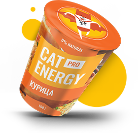

Функциональное питание для котов
Промо
Занялся собой? Займись котом! Подобрать программу Услуги
-
- Похудение
- Ваш кот весит больше собаки и почти утратил способность лазить по деревьям? Пора на диету! Cat Energy Slim поможет вашему питомцу сбросить лишний вес.
-
- Набор массы
- Заработать авторитет среди дворовых котов и даже собак? Серия Cat Energy Pro поможет вашему коту нарастить необходимые мышцы!
Как это работает
- Функциональное питание содержит только полезные питательные вещества.
- Выпускается в виде порошка, который нужно лишь залить кипятком и готово.
- Замените один-два приема обычной еды на наше функциональное питание.
- Уже через месяц наслаждайтесь изменениями к лучшему вашего питомца!
Живой пример
Борис сбросил 5 кг за 2 месяца, просто заменив свой обычный корм на Cat Energy Slim. Отличный результат без изнуряющих тренировок! При этом он не менял своих привычек и по-прежнему спит по 16 часов в день.
| 5кг | 60 дней |
| Снижение веса | Затрачено времени |
|---|
Затраты на питание: 15 000 руб.